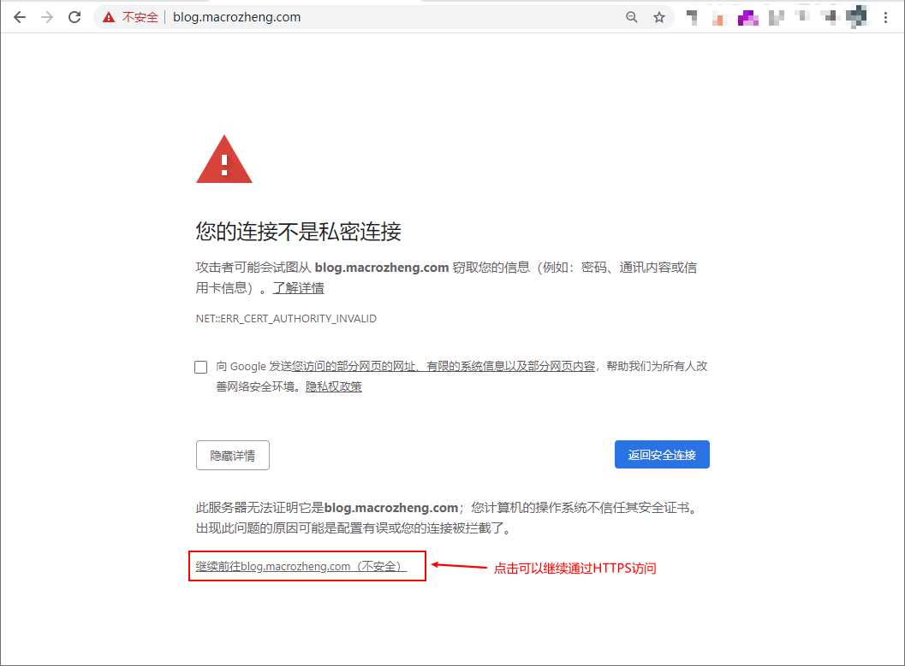
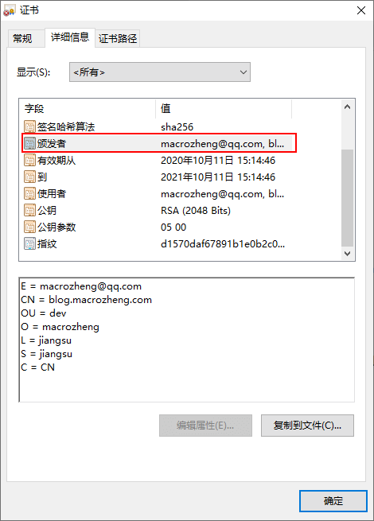
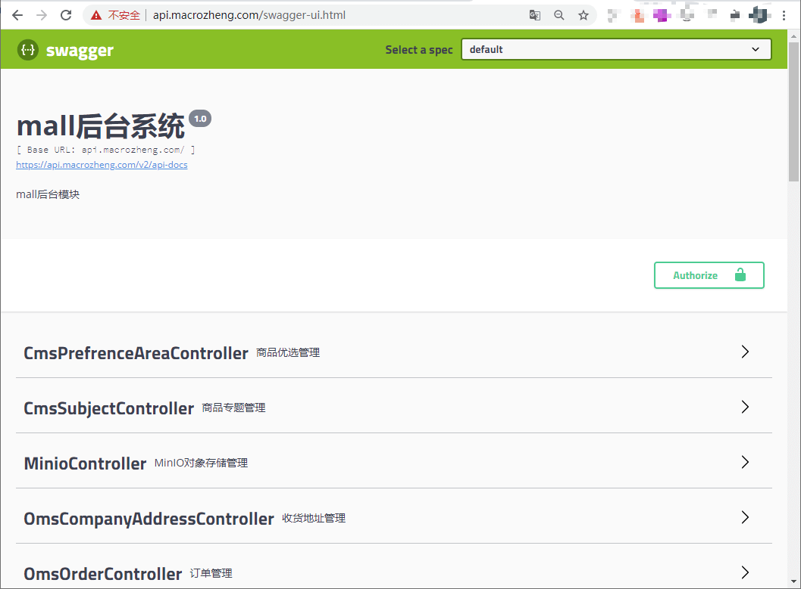
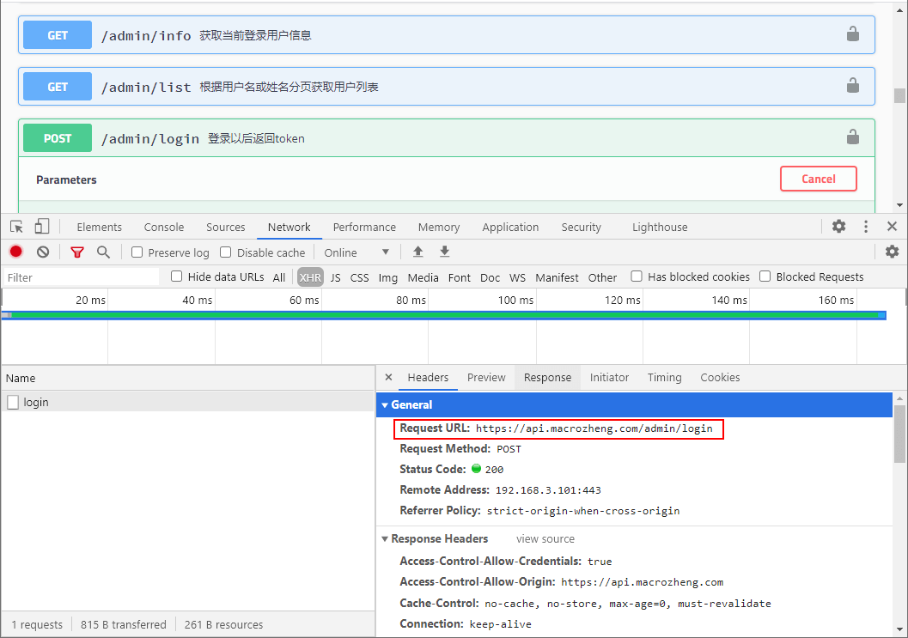
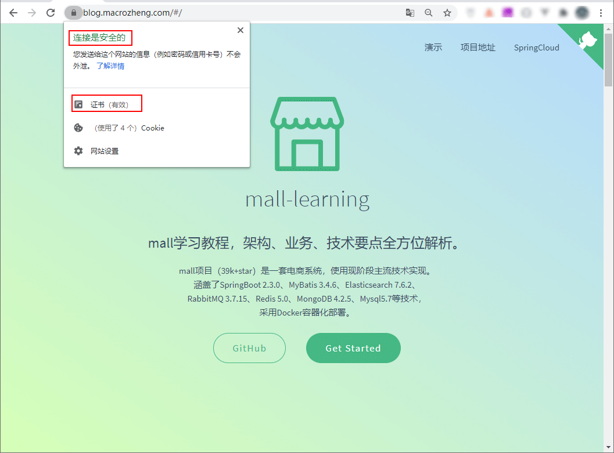
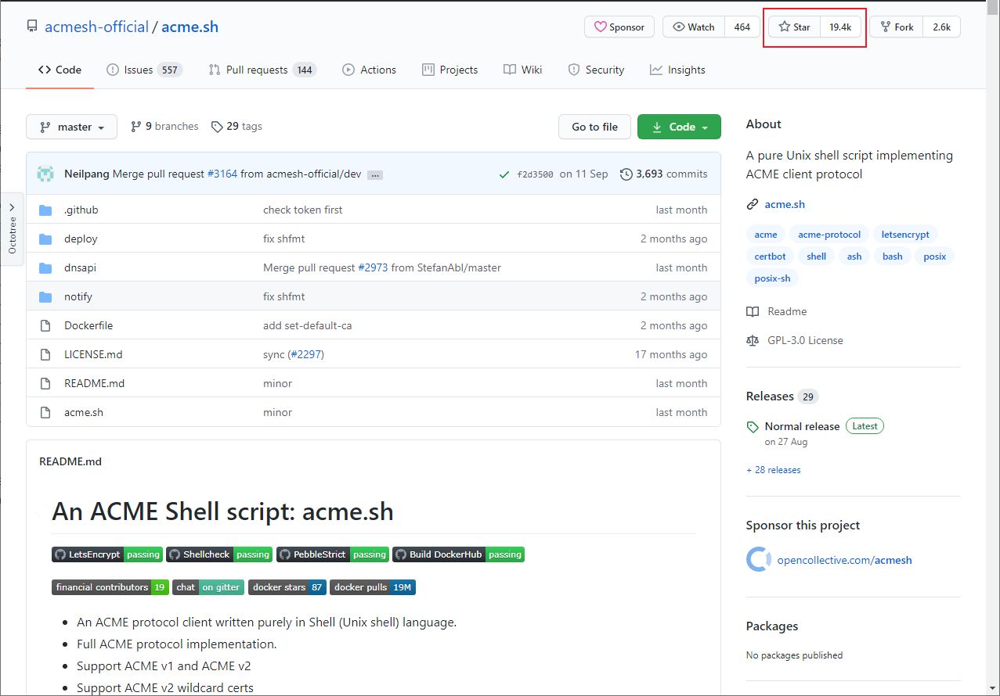

学习不走弯路，关注公众号 回复「学习路线」，获取mall项目专属学习路线！
Nginx如何支持HTTPS？手把手教贼简单！
随着我们网站用户的增多，我们会逐渐意识到HTTPS加密的重要性。在不修改现有代码的情况下，要从HTTP升级到HTTPS，让Nginx支持HTTPS是个很好的选择。今天我们来讲下如何从Nginx入手，从HTTP升级到HTTPS，同时支持静态网站和SpringBoot应用，希望对大家有所帮助！
生成SSL自签名证书
虽然自签名证书浏览器认为并不是安全的，但是学习下SSL证书的生成还是很有必要的！
- 首先创建SSL证书私钥，期间需要输入两次用户名和密码，生成文件为
blog.key；
openssl genrsa -des3 -out blog.key 2048
- 利用私钥生成一个不需要输入密码的密钥文件，生成文件为
blog_nopass.key；
openssl rsa -in blog.key -out blog_nopass.key
- 创建SSL证书签名请求文件，生成SSL证书时需要使用到，生成文件为
blog.csr；
openssl req -new -key blog.key -out blog.csr
- 在生成过程中，我们需要输入一些信息，需要注意的是
Common Name需要和网站域名一致；
Enter pass phrase for blog.key:
-----
Country Name (2 letter code) [XX]:CN # 国家代码
State or Province Name (full name) []:jiangsu # 省份
Locality Name (eg, city) [Default City]:jiangsu # 城市
Organization Name (eg, company) [Default Company Ltd]:macrozheng # 机构名称
Organizational Unit Name (eg, section) []:dev # 单位名称
Common Name (eg, your name or your server's hostname) []:blog.macrozheng.com # 网站域名
Email Address []:macrozheng@qq.com # 邮箱
Please enter the following 'extra' attributes
to be sent with your certificate request
A challenge password []: # 私钥保护密码,可以不输入直接回车
An optional company name []: # 可选公司名称，可以不输入直接回车
- 生成SSL证书，有效期为365天，生成文件为
blog.crt；
openssl x509 -req -days 365 -in blog.csr -signkey blog.key -out blog.crt
- 其实最终有用的文件是两个，一个是证书文件
blog.crt，另一个是不需要输入密码的证书私钥文件blog_nopass.key。
Nginx支持HTTPS
SSL证书生成好了，接下来我们就可以配置Nginx来支持HTTPS了！
安装Nginx
- 我们还是使用在Docker容器中安装Nginx的方式，先下载Nginx的Docker镜像；
docker pull nginx:1.10
- 下载完成后先运行一次Nginx，由于之后我们要把宿主机的Nginx配置文件映射到Docker容器中去，运行一次方便我们拷贝默认配置；
docker run -p 80:80 --name nginx \
-v /mydata/nginx/html:/usr/share/nginx/html \
-v /mydata/nginx/logs:/var/log/nginx \
-d nginx:1.10
- 运行成功后将容器中的Nginx配置目录拷贝到宿主机上去；
docker container cp nginx:/etc/nginx /mydata/nginx/
- 将宿主机上的
nginx目录改名为conf，要不然/mydata/nginx/nginx这个配置文件目录看着有点别扭；
mv /mydata/nginx/nginx /mydata/nginx/conf
- 创建的Nginx容器复制完配置后就没用了，停止并删除容器；
docker stop nginx
docker rm nginx
- 使用Docker命令重新启动Nginx服务，需要映射好配置文件，由于我们要支持HTTPS，还需要开放
443端口。
docker run -p 80:80 -p 443:443 --name nginx \
-v /mydata/nginx/html:/usr/share/nginx/html \
-v /mydata/nginx/logs:/var/log/nginx \
-v /mydata/nginx/conf:/etc/nginx \
-d nginx:1.10
配置支持HTTPS
- 将我们生成好的SSL证书和私钥拷贝到Nginx的
html/ssl目录下；
cp blog_nopass.key /mydata/nginx/html/ssl/
cp blog.crt /mydata/nginx/html/ssl/
- 接下来我们需要给
blog.macrozheng.com这个域名添加HTTPS支持，在/mydata/nginx/conf/conf.d/目录下添加Nginx配置文件blog.conf，配置文件内容如下；
server {
listen 80; # 同时支持HTTP
listen 443 ssl; # 添加HTTPS支持
server_name blog.macrozheng.com;
#SSL配置
ssl_certificate /usr/share/nginx/html/ssl/blog/blog.crt; # 配置证书
ssl_certificate_key /usr/share/nginx/html/ssl/blog/blog_nopass.key; # 配置证书私钥
ssl_protocols TLSv1 TLSv1.1 TLSv1.2; # 配置SSL协议版本
ssl_ciphers ECDHE-RSA-AES128-GCM-SHA256:HIGH:!aNULL:!MD5:!RC4:!DHE; # 配置SSL加密算法
ssl_prefer_server_ciphers on; # 优先采取服务器算法
ssl_session_cache shared:SSL:10m; # 配置共享会话缓存大小
ssl_session_timeout 10m; # 配置会话超时时间
location / {
root /usr/share/nginx/html/www;
index index.html index.htm;
}
location /admin {
alias /usr/share/nginx/html/admin;
index index.html index.htm;
}
location /app {
alias /usr/share/nginx/html/app;
index index.html index.htm;
}
error_page 500 502 503 504 /50x.html;
location = /50x.html {
root /usr/share/nginx/html;
}
}
- 通过
HTTPS访问blog.macrozheng.com这个域名，由于我们使用的是自己签名的SSL证书，浏览器会提示您的连接不是私密连接，点击继续前往可以通过HTTPS正常访问；

- 我们可以查看下证书的
颁发者信息，可以发现正好是之前我们创建SSL证书签名请求文件时录入的信息；

- 接下来我们需要给
api.macrozheng.com这个域名添加HTTPS支持，通过这个域名可以使用HTTPS访问我们的SpringBoot应用，api.crt和api_nopass.key文件需要自行生成，在/mydata/nginx/conf/conf.d/目录下添加Nginx配置文件api.conf，配置文件内容如下；
server {
listen 80; # 同时支持HTTP
listen 443 ssl; # 添加HTTPS支持
server_name api.macrozheng.com; #修改域名
#ssl配置
ssl_certificate /usr/share/nginx/html/ssl/api/api.crt; # 配置证书
ssl_certificate_key /usr/share/nginx/html/ssl/api/api_nopass.key; # 配置证书私钥
ssl_protocols TLSv1 TLSv1.1 TLSv1.2; # 配置SSL协议版本 # 配置SSL加密算法
ssl_ciphers ECDHE-RSA-AES128-GCM-SHA256:HIGH:!aNULL:!MD5:!RC4:!DHE;
ssl_prefer_server_ciphers on; # 优先采取服务器算法
ssl_session_cache shared:SSL:10m; # 配置共享会话缓存大小
ssl_session_timeout 10m; # 配置会话超时时间
location / {
proxy_pass http://192.168.3.101:8080; # 设置代理服务访问地址
proxy_set_header Host $http_host; # 设置客户端真实的域名（包括端口号）
proxy_set_header X-Real-IP $remote_addr; # 设置客户端真实IP
proxy_set_header X-Forwarded-For $proxy_add_x_forwarded_for; # 设置在多层代理时会包含真实客户端及中间每个代理服务器的IP
proxy_set_header X-Forwarded-Proto $scheme; # 设置客户端真实的协议（http还是https）
index index.html index.htm;
}
error_page 500 502 503 504 /50x.html;
location = /50x.html {
root /usr/share/nginx/html;
}
}
- 通过
HTTPS访问api.macrozheng.com这个域名，访问地址为：https://api.macrozheng.com/swagger-ui.html

- 任意调用一个接口测试下，比如说登录接口，可以发现已经可以通过HTTPS正常访问SpringBoot应用提供的接口。

使用受信任的证书
之前我们使用的是自签名的SSL证书，对于浏览器来说是无效的。使用权威机构颁发的SSL证书浏览器才会认为是有效的，这里给大家推荐两种申请免费SSL证书的方法，一种是从阿里云申请，另一种是从FreeSSL申请。
阿里云证书
- 阿里云上可以申请的免费证书目前只有支持单个域名的DV级SSL证书。比如说你有
blog.macrozheng.com和api.macrozheng.com两个二级域名需要使用HTTPS，就需要申请两个SSL证书。

- 申请成功后点击下载Nginx证书即可；

- 下载完成后解压会有下面两个文件；
blog.macrozheng.com.key # 证书私钥文件
blog.macrozheng.com.pem # 证书文件
- 拷贝证书文件到Nginx的指定目录下，然后修改配置文件
blog.conf，只要修改证书配置路径即可，修改完成后重启Nginx；
#SSL配置
ssl_certificate /usr/share/nginx/html/ssl/blog/blog.macrozheng.com.pem; # 配置证书
ssl_certificate_key /usr/share/nginx/html/ssl/blog/blog.macrozheng.com.key; # 配置证书私钥
- 再次通过HTTPS访问
blog.macrozheng.com这个域名，发现证书已经有效了，连接也是安全的了。

FreeSSL证书
- 如果你有使用通配符域名的需求，可以上
FreeSSL申请SSL证书，不过免费的有效期只有3个月，这就意味着你过3个月就要重新申请一次了。

- 附上官网地址：https://freessl.cn/
使用acme.sh自动申请证书
acme.sh脚本实现了acme协议, 可以从letsencrypt生成免费的证书。一般我们申请的证书有效期都是1年，过期就要重新申请了，使用acme.sh脚本可以实现到期自动申请，再也不用担心证书过期了！

公众号